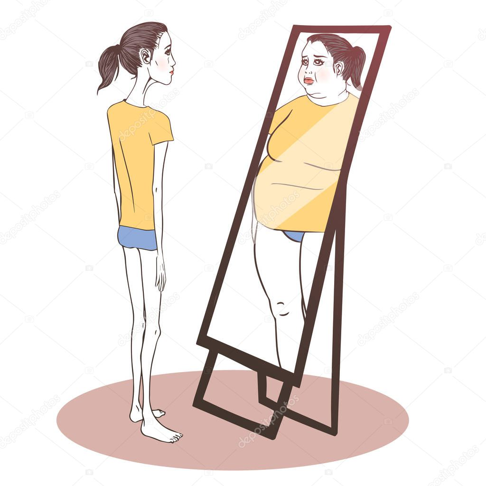
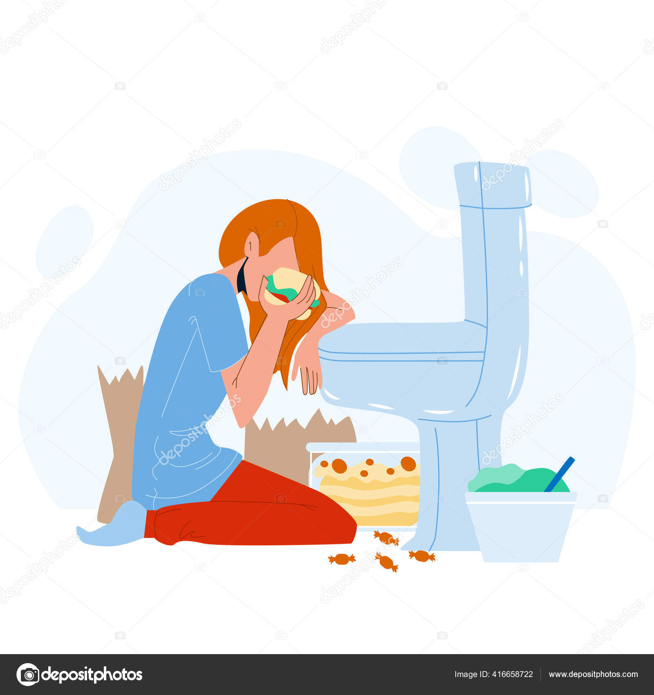
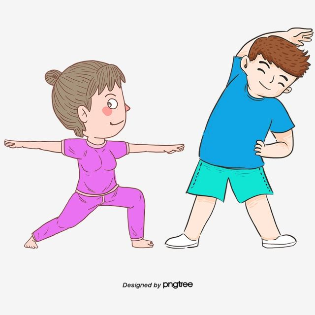
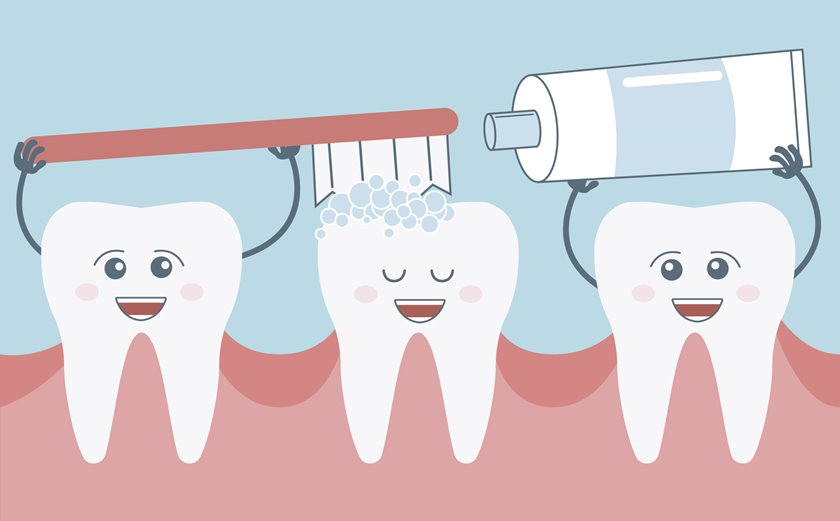
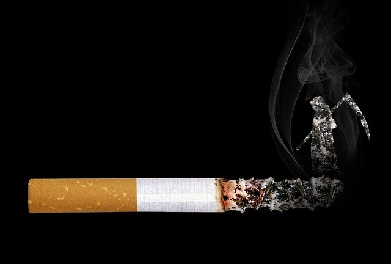

Eating Disorders
Eating disorders are so common in America that 1 or 2 out every 100 students will struggle with one. The most common types of eating disorder are anorexia nervosa and bulimia nervosa (usually called simply “anorexia” and “bulimia”: But other food-related disorders, like binge eating disorders, body image disorders, and food phobias, are showing up more frequently than they used to.
ANOREXIA
People with anorexia have an extreme fear of weight gain and a distorted view of their body size and shape. As a result, they can’t maintain a normal body weight. Some people with anorexia restrict their food intake by dieting, or excessive exercise. They hardly eat at all – and the small amount of food they do eat becomes an obsession. Other people with eating disorders do something called binge eating and purging, where they eat a lot of food and then try to get rid of the calories by forcing themselves to vomit, using laxatives, or exercising excessively.
ANOREXIA
Las personas con anorexia tienen un miedo extremo a ganar peso y una visión distorsionada de su tamaño y forma del cuerpo. Como resultado, no pueden mantener un peso corporal normal. Algunas personas con anorexia restringen su ingesta de alimentos mediante dietas o ejercicio excesivo. Casi no comen nada y la pequeña cantidad de comida que comen se convierte en una obsesión. Otras personas con trastornos alimentarios hacen algo llamado atracones y purgas, donde Comen mucha comida y luego intentan deshacerse de las calorías obligándose a vomitar. usar laxantes o hacer ejercicio excesivo.

BULIMIA
Bulimia is similar to anorexia. With bulimia, a person binge eats (eats far too much food) and then tries to compensate it extreme ways, such as forced vomiting or excessive exercise, to prevent weight gain. Over time, these steps can be dangerous. To be diagnosed with bulimia, a person must be binging and purging regularly, at least twice a week for a couple of months. People with bulimia eat a large amount of food (often junk food) at once, usually in secret. The person typically feels powerless to stop eating and can only stop once he or she is too full to eat any more.
BULIMIA
La bulimia es similar a la anorexia. Con bulimia, una persona come compulsivamente (come demasiada comida) y luego intenta compensarlo de formas extremas, como vómitos forzados o exceso ejercicio, para prevenir el aumento de peso. Con el tiempo, estos pasos pueden resultar peligrosos. Ser diagnosticada con bulimia, una persona debe darse atracones y purgarse regularmente, al menos dos veces al semana durante un par de meses. Las personas con bulimia comen una gran cantidad de comida (a menudo comida chatarra). comida) a la vez, generalmente en secreto. La persona normalmente se siente impotente para dejar de comer y sólo puede parar cuando esté demasiado lleno para comer

True (T) - A significant number of American students, as well as individuals in other demographics, are affected by eating disorders. These disorders are prevalent and can impact many people.
False (F) - Anorexia and bulimia are not the only food-related disorders. Other disorders include binge eating disorder, orthorexia, and other less common eating disorders.
False (F) - People with anorexia often have a distorted body image and may not like their body; in fact, they typically see themselves as overweight even when they are underweight.
True (T) - Some individuals with anorexia do eat very little and engage in excessive exercise as part of their disorder. This behavior is part of their effort to lose weight and control their body image.
True (T) - Some people with bulimia may try to counteract their binge eating episodes by exercising regularly or using other methods to prevent weight gain.
1 .What are the symptoms of bulimia?
The symptoms of bulimia include frequent episodes of binge eating, where the individual consumes large quantities of food in a short period of time, often accompanied by a feeling of loss of control. This is followed by compensatory behaviors such as vomiting, excessive use of laxatives or diuretics, fasting, or excessive exercise to prevent weight gain. Other symptoms may include preoccupation with body weight and shape, dehydration, dental erosion, and gastrointestinal issues.
2. When can we say that a person suffers from bulimia?
A person can be said to suffer from bulimia when they experience recurrent episodes of binge eating and engage in compensatory behaviors to avoid weight gain at least once a week for three months or more. Additionally, there is a strong preoccupation with body weight and shape, which significantly affects their self-esteem and emotional well-being.
3. Why do bulimics eat so much?
ACTIVITY 4:
COMPLETA EL SIGUIENTE CUADRO CON LA INFORMACIÒN QUE SE PIDE: ESCRIBE EN CADA CASO TRES
SUGERENCIAS APLICANDO LAS EXPRESIONES: SHOULD – SHOULDN’T / HOW ABOUT…? / WHY DON`T YOU…? PARA
EXPRESAR LA POSIBLE SOLUCIÒN A CADA UNA DE ESTAS SITUACIONES DE SALUD. UTILIZA VOCABULARIO Y EXPRESIONES ESTUDIADAS Y TRABAJADAS EN CLASE
EATING DISORDERS
WHY DON`T YOU…?
YOU SHOULD… / YOU SHOULDN`T…
HOW ABOUT GOING TO…?
ANOREXIA:
WHY DON'T YOU TRY TO GO TO THE NUTRITIONIST FOR HELP? / YOU SHOULD NOT EAT SO LITTLE AND EXERCISE SO MUCH HOW ABOUT WE GO TO TRY TO EAT SOMETHING OR GO TO THE PSYCHOLOGIST TO HELP YOU VV?
BULIMIA:
¿ WHY DON'T YOU TRY TO EAT ONLY WHAT YOU LIKE THE MOST? YOU SHOULDN`T SPIKE THE FOOD AND STOP EATING HOW ABOUT WE GO TO THE DOCTOR TO SEE HOW HE CAN HELP YOU?
Hábitos Saludables
Comer frutas y verdurasv
Sugerencia: You should eat a variety of fruits and vegetables every day to ensure you get all the necessary vitamins and minerals. Try including them in every meal.
Hacer ejercicio regularmente

Sugerencia: You should engage in at least 30 minutes of moderate exercise most days of the week. How about setting a regular schedule for your workouts?
Beber suficiente agua

Sugerencia: You should drink at least 8 glasses of water a day to stay hydrated. How about carrying a reusable water bottle to help you remember?
Dormir al menos 7-8 horas por noche
Sugerencia: You should aim for 7-8 hours of sleep each night for optimal health. How about establishing a relaxing bedtime routine to improve your sleep quality?
Practicar la meditación o el mindfulness
Sugerencia: You should practice meditation or mindfulness regularly to manage stress and improve mental clarity. How about starting with just 5 minutes a day?
Cepillarse los dientes dos veces al día

Sugerencia: You should brush your teeth twice a day to maintain good oral hygiene. How about setting reminders if you tend to forget?
Hábitos No Saludables
Comer comida chatarra frecuentemente
Sugerencia: You shouldn’t eat junk food often as it can lead to health problems. How about replacing it with healthier snacks like nuts or fruits?
Fumar cigarrillos

Sugerencia: You shouldn’t smoke cigarettes as it greatly increases the risk of various health issues. How about seeking support or resources to help quit smoking?
Beber alcohol en exceso
sugerencia: You shouldn’t drink alcohol excessively as it can harm your liver and overall health. How about limiting your intake and choosing alcohol-free days?
Pasar largas horas frente a la pantalla sin descanso
Sugerencia: You shouldn’t spend long periods of time in front of screens without breaks. How about following the 20-20-20 rule: every 20 minutes, look at something 20 feet away for 20 seconds?
Saltarse comidas regularmente

Sugerencia: You shouldn’t skip meals regularly as it can lead to imbalanced nutrition and energy dips. How about planning balanced meals and snacks throughout the day?
No hacer chequeos médicos regulares

Sugerencia: You shouldn’t neglect regular medical check-ups as they are important for early detection of health issues. How about scheduling annual visits with your healthcare provider?